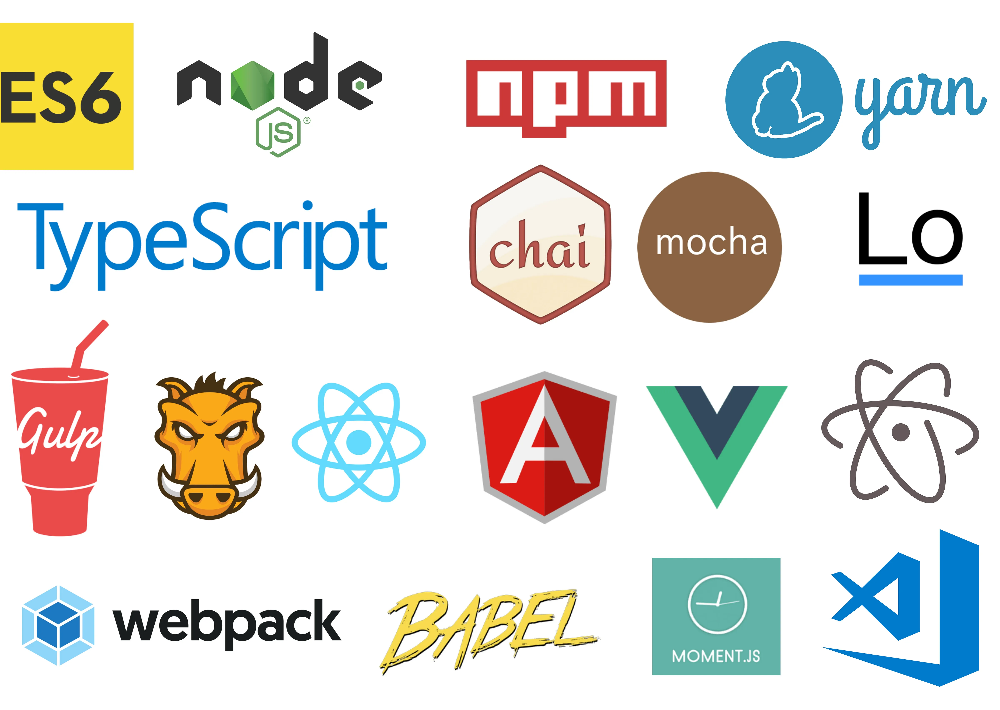
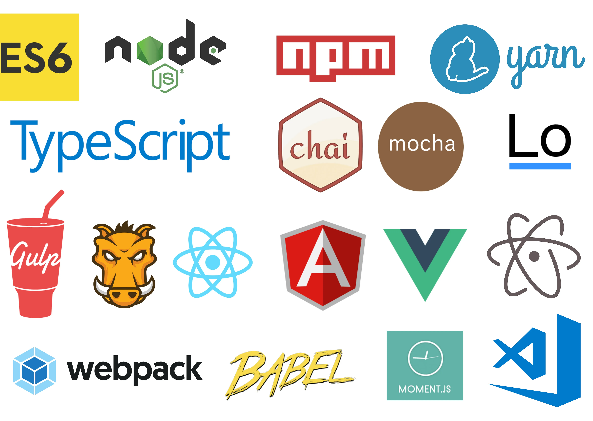

JavaScript - bu interaktiv va dinamik veb-saytlarni yaratish uchun keng qo'llaniladigan dasturlash tili. U birinchi marta 1995 yilda Brendan Eich tomonidan ishlab chiqilgan va hozirda ECMAScript standartlari organi tomonidan qo'llab-quvvatlanadi. JavaScript barcha asosiy veb-brauzerlar tomonidan qo'llab-quvvatlanadigan yuqori darajali, talqin qilingan dasturlash tilidir.
JavaScript odatda HTML va CSS kabi boshqa veb-texnologiyalar bilan birgalikda ishlatiladi. HTML veb-sahifaning tuzilishini ta'minlaydi, CSS esa maket va dizaynni yaratish uchun ishlatiladi. JavaScript veb-sahifaga interaktivlik va dinamik xatti-harakatlarni qo'shish uchun ishlatilishi mumkin.


1- JavaScript voqealarga asoslangan tildir, ya'ni kod tugmani bosish yoki sahifa yuklanishi kabi muayyan hodisalarga javoban ishlaydi. Bu yanada interaktiv va sezgir foydalanuvchi tajribasiga imkon beradi.
2- JavaScript erkin terilgan tildir, ya'ni siz o'zgaruvchini e'lon qilganingizda uning ma'lumotlar turini ko'rsatishingiz shart emas. Bu kodni yanada moslashuvchan qilishi mumkin, lekin disk raskadrovkani ham qiyinlashtirishi
3- JavaScript - bu ob'ektga yo'naltirilgan til, ya'ni siz kodingizni tartibga solish va tuzilish uchun ob'ektlar va sinflarni yaratishingiz mumkin. Bu prototiplar va konstruktorlar yordamida amalga oshiriladi.
4- JavaScript-da turli xil o'rnatilgan funktsiyalar va ob'ektlarni ta'minlovchi boy standart kutubxona mavjud. Bunga massivlar, satrlar va sanalar, shuningdek, muntazam ifodalar va taymerlar kabi kengaytirilgan xususiyatlar kiradi.
5- JavaScript ko'pincha dinamik veb-ilovalarni yaratish uchun AJAX va JSON kabi boshqa texnologiyalar bilan birgalikda ishlatiladi. AJAX asinxron veb-sahifalarni yaratishga imkon beradi, ular sahifani yangilamasdan yangilanishi mumkin. JSON - bu server va mijoz o'rtasida ma'lumotlarni uzatish uchun tez-tez ishlatiladigan engil ma'lumot almashish formati.
6- JavaScript-dan React Native va Electron kabi texnologiyalar yordamida platformalararo ilovalar yaratish uchun ham foydalanish mumkin.
7- JavaScript jonli va faol hamjamiyatga ega, ya'ni o'rganish va boshlashga yordam beradigan ko'plab manbalar va ramkalar mavjud. Bundan tashqari, boshqa ishlab chiquvchilar bilan bog'lanishingiz va so'nggi tendentsiyalar va eng yaxshi amaliyotlardan xabardor bo'lishingiz mumkin bo'lgan ko'plab konferentsiyalar va uchrashuvlar mavjud.
8- JavaScript-da juda ko'p uchinchi tomon kutubxonalari va ramkalari mavjud bo'lib, ular ishlab chiqish jarayonini soddalashtirish va murakkab ilovalarni yaratishni osonlashtirish uchun ishlatilishi mumkin, masalan, Jquery, Lodash, axios, Moment.js va boshqalar.
9- Nihoyat, JavaScript doimiy ravishda rivojlanib bormoqda, yangi xususiyatlar va yangilanishlar muntazam ravishda chiqariladi. Til imkoniyatlaridan to‘liq foydalanish uchun eng so‘nggi yangiliklardan xabardor bo‘lish muhim.

 
